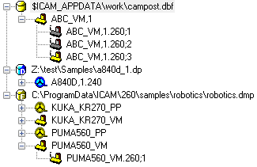

When models are not being worked on in memory, they are
stored on disk in an ICAM database. The database format is
proprietary to ICAM. The database is platform independent, allowing
it to be used on UNIX and Windows computer types, however starting
with V21, ICAM no longer supports the creation or modification of
databases on UNIX computers. Starting with V22, ICAM products no
longer run on UNIX systems.
Model File Name Conventions
Each revision of each model is stored in the database under
a special name. This name is a combination of the model name
and identification number. The default model name is MODEL,1
which can be changed in the “General Information” section
of the “General Machine Description” chapter of the Questionnaire, or
when saving. The name is of the form:
The “xxxxxx” part is name of the model. Its length
can be a minimum of one character and can have a maximum of 32
characters (including those of the identification number described
below). Any combination of letters, digits and underscore “_”
characters may be used but the first character must be a letter.
The “,nn” part of the name is an optional identification
number of the model. This number can range from 1 through
1. Negative or zero identification numbers are not allowed.
The “.vvv” part of the name is automatically supplied and
shows the version number of QUEST that was used to create the
model. For QUEST V26, the version identifier appears as
“.260”.
The “;r” part of the name is the model revision
number. This number increments by 1 each time the model is
saved or generated to the database. There is a limit of 9999
revisions of each model that can be kept in the database.
Use the database “Purge” and/or “Delete” functions to remove unwanted
revisions.
The default name of a model, if unchanged in the General
Information section, is:
The Database Navigator

The image at right shows an example of the contents
of the Database Navigator window. When Virtual Machine is first installed,
the database navigator window will most likely contain a single empty
database named campost.dbf.
If you have an earlier version of the software installed on your
system, you might see the old database listed with a small “R”
character in the database icon. This signifies that the database is
read-only.
See the “Database Upgrade Procedure” section in the Icam Post or Control Emulator manuals
for details on upgrading all models in the old database to the new version.
You can also selectively open models from a read-only
database and save them to a different writable database.
Databases are secured with a serial number, defined by the PRISER
security key entry in your license file. You cannot access the
contents of databases created with a different serial number or with
the Foundation product, unless you are specifically licensed to do so
with a SECSER security key entry in your license file. A database to
which you have no license authority is listed with a grey database
icon.
Databases
The navigator view can list many databases. You add databases to the
navigator using the Database»Open menu-bar selection. You can
also add databases by dragging and dropping them onto QUEST from the
File Explorer. You create a database (and add it to the navigator at
the same time) using the Database»New menu-bar selection. You can
organize the order in which databases are listed by dragging and
dropping them in the Database Navigator view.
You remove databases from the navigator using the Database
menu-bar Close, Close All and Close All But This
selections, or by selecting a database and pressing the Delete key.
Removing a database from the navigator has no effect on the actual
database (i.e., the database is not affected in any way).
A database can be password protected. This will stop unauthorized
modification of models using QUEST, while still allowing
their use with GENER and CERUN. Note that the GENER and CERUN debugger and macro tracing
features are not available when running against a password protected
database. The Database»Password and Database»Lock menu-bar
selections control this feature.
The first time you lock a database, you will be asked for a password
(8 characters maximum). A locked database cannot be read or written
by QUEST, even by the person who locked it. The database must be
unlocked before it can be used by QUEST. To do so, first select it,
then choose the Database»Lock menu-bar selection and type in the
password to unlock the database. A database need be unlocked only
once per QUEST session. Unlocking it makes it available to your QUEST
session only, it does not unlock it for other people. To permanently
unlock the database, you can either select the Remove Password
Protection checkbox when unlocking the database, or you can change
the password to an empty string using the Database»Password
menu-bar selection. The locked vs. unlocked state of a database can
be seen by the choice of icon that appears in the database navigator
beside the file name. A red lock symbol indicates a locked database.
A green lock symbol indicates an unlocked database. The absence of a
lock symbol indicates that there is no password protection.
Synchronization problems can occur when two or more users run QUEST
at the same time and make changes to the same database. By default,
all database information in the navigator view is updated when QUEST
first starts and individual database views are refreshed whenever
model data is read, written or deleted from the database.
You can manually refresh all databases in the navigator window using
the F5 function key. You can have the navigator automatically refresh
the database view on a regular time interval using the
Database»AutoRefresh menu-bar selection. It’s important to note
that what is being refreshed is your QUEST session’s idea of the
state of the databases listed in the navigator view. The databases
themselves are only updated when you write or delete data from them.
To see the list of actions that can be performed on databases, select
a database name in the navigator view and press the right-mouse
button. A pop-up menu will appear listing the most common actions:
Open: Lists the contents of the database in the main work window.
Double-clicking on a database name is equivalent to a Open. The
View»By Type menu-bar selection can be used to list a subset of
post-processors, control emulators and models in the database
matching some criteria.
Close: Removes the selected database from the navigator view.
Close All: Removes all databases from the navigator view.
Close All But This: Removes all but the selected database from
the navigator view.
Lock: Enables or disables password protection on the database.
Generate: Performs a consistency check on every post-processor,
control emulator and model in the database, so that they can be used with
GENER and CERUN respectively.
Import: Used to import (read) post-processors, control emulators,
models and their dedicated counterparts into the database from a
dmp file (see Export below).
Upgrade: This function creates a copy of the selected database
with all post-processors, control emulators and models upgraded to
the current version (i.e., V26). It is only available if the
selected database has been created with an older release (e.g., V25.1).
Export: Used to export (write) a copy of all post-processors,
control emulators and models from the database to an external dmp
file.
Copy to Database: Used to directly copy post-processors, control
emulators and models from one database to another, avoiding a two
step export/import process.
Purge: Removes all excess revisions of all post-processors,
control emulators and models in the database, optionally resetting
revision numbers to “;1”. This operation will not free up disk space.
To free up disk space, export the database contents after purging and
import the data into a new database. Delete the old database once you
are sure that the copy was successful.
Listing: Creates a printable or browsable listing for each
post-processor and control emulator in the database. The listing
shows the responses to all questions as well as all customization.
Listings are not generated for models, nor for dedicated
post-processors and dedicated control emulators.
Models
Each database listed in the navigator contains a (possibly empty)
list of models. Each model will have at least one
revision and quite possibly many revisions in the database. In the
database navigator image (see here), there are three
revisions of the ABC_VM,1 model: ABC_VM,1.260;1, ABC_VM,1.260;2 and
ABC_VM,1.260;3.
You can open a specific revision of a model for editing by
double-clicking the revision name (e.g., clicking on ABC_VM,1.260;1
opens the first revision of the model, not the latest one).
You can open the most recent revision of the model by
double-clicking on the simple name (e.g., clicking on ABC_VM,1 will open
ABC_VM,1.260;3, the latest revision of the model). When a
model is opened for editing, it will be loaded into memory
and its content listed in one of the Navigator tabs. The
model name, revision and originating database will all be
shown at the top of the Navigator window.
Model revisions shown with a black icon have been saved but
not generated. Those with a gold colored icon have been generated and
can be used with GENER and CERUN. Those shown with a blue icon are dedicated
models. A dedicated model can be used with GENER and CERUN
under special licensing, but cannot be viewed or edited with QUEST. A
dimmed icon with a red “x” in the upper right corner signifies a
hidden model. A model marked as hidden (see below)
can not be selected by the user in GENER and CERUN.
To see the list of actions that can be performed on models,
select a model name in the navigator view and press the
right-mouse button. A pop-up menu will appear listing the most common
actions:
Open: Opens the model for editing, by placing a copy of
the model into one of the Navigator tabs.
Hide: Marks the model as hidden, making it unavailable
for selection by user in GENER and CERUN. This is useful to temporarily remove
a model from production use, as well as for making component
posts of a hybrid model (i.e., super post) unavailable for
stand-alone execution.
Generate: Performs a consistency check on the model, so
that it can be used with GENER and CERUN.
Export: Used to export (write) a copy of the model from
the database to an external dmp file.
Copy to Database: Used to make a copy of the model to a
selected database, using the same name.
Copy: Used to make a copy of the model in the
same database, using a different name.
Delete: Used to remove the model from the database. This
operation cannot be undone. Once removed (deleted), the
model cannot be restored or used.
Rename: Used to change the name of a model.
Purge: Removes all excess revisions of the model,
optionally resetting the revision number to “;1”. This operation will
not free up disk space.
{kind=link}